About this guide: These guides walk you through common investigation workflows step by step. Each workflow builds on the previous one, so we recommend reading them in order the first time through.
Version: February 2026
- Getting Started — Your First Case
- Uploading Evidence Files
- Processing Evidence with the LLM
- Working with the Knowledge Graph
- Investigating Entities — Facts, Insights & Source Documents
- Building Investigation Theories
- Marking Evidence as Relevant
- Finding & Merging Duplicate Entities
- Using the Investigation Workspace
- Saving & Comparing Snapshots
- Financial Transaction Analysis
- Wiretap Folder Processing
- Using the AI Chat Assistant
- Exporting & Reporting
- Backfilling Summaries & Embeddings
- Administration & User Management
- Workflow Cheat Sheet
- Tips & Best Practices
1 Getting Started — Your First Case
What you’ll learn: How to create a new investigation case, set it up with context, and invite collaborators.
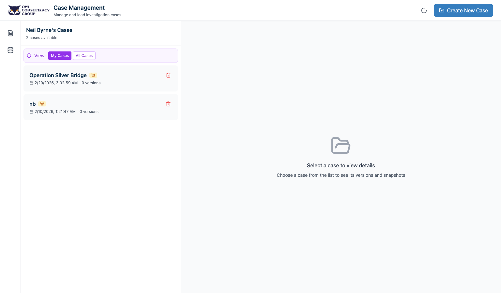
Steps
Step 1 — Sign In
When you first open OWL, you’ll see the sign-in panel. Enter your username and password and click Sign In. To change your password later, click Change Password from the account dropdown (your initials icon in the top-left corner).
Step 2 — Create a Case
After signing in, you land on the Case Management view. Click the + Create button in the top-right. Fill in:
- Title — Give your case a name (e.g., “Smith Financial Fraud Investigation”)
- Description — Briefly describe the case
- Save Notes — Optional internal notes
Click Save to create the case.
Step 3 — Add Collaborators (Optional)
On your case card, click the people icon to open the Collaborators modal. You can invite other users by email and set permission levels: Owner, Editor, Viewer, or Guest.
Step 4 — Enter the Case
Click Load Case on the case card. A progress dialog shows while the case loads. You’ll arrive at the Workspace View — the main investigation screen.
2 Uploading Evidence Files
What you’ll learn: How to upload individual files, folders, and large batches of evidence into a case.
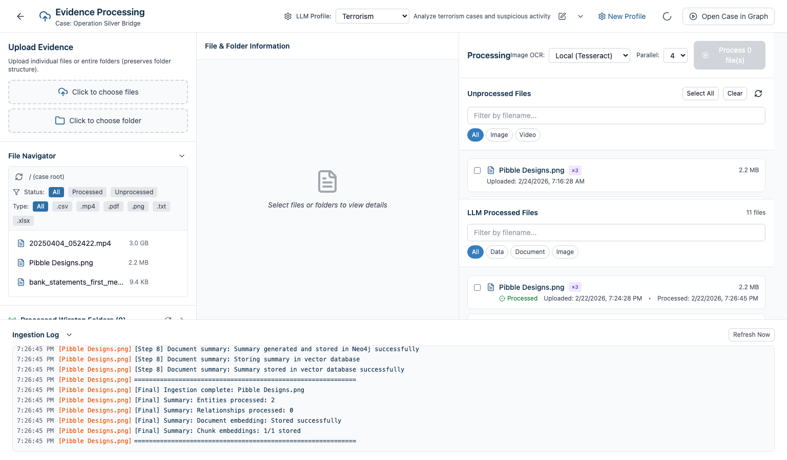
Steps
Step 1 — Open Evidence Processing
From the Case Management screen, click the Evidence Processing button on your case card. This opens the full-screen Evidence Processing view.
Step 2 — Upload Individual Files
Click Upload Files and select one or more files. Supported formats include:
| Category | Formats |
|---|---|
| Documents | PDF, Word (.doc/.docx), text, RTF |
| Images | JPG, PNG, GIF, WebP, BMP, SVG |
| Audio | MP3, WAV, OGG, FLAC, AAC, M4A |
| Video | MP4, WebM, MOV, AVI, MKV |
| Data | CSV, Excel, JSON |
Files appear in the Unprocessed Files section after upload.
Step 3 — Upload a Folder
Click Upload Folder to upload an entire directory. This preserves the folder structure, which is important for wiretap processing workflows. Large folder uploads run as background tasks.
Step 4 — Browse with the File Navigator
The File Navigator on the left shows your case’s file tree. Click folders to expand them. Look for these indicators:
- Green radio icon — Wiretap-processed folder
- Checkmark — Processed file
Step 5 — Understand File Status
Each file has a processing status: Unprocessed (uploaded, not analysed), Processing (currently analysed), Processed (LLM complete, entities extracted), or Failed (error encountered).
3 Processing Evidence with the LLM
What you’ll learn: How to run LLM analysis on your evidence files to extract entities and relationships into the knowledge graph.
Steps
Step 1 — Select Files to Process
In the Unprocessed Files section, use the checkboxes to select files. You can Select All, select individually, or filter by type (Image, Document, Audio, etc.).
Step 2 — Choose a Processing Profile
Select a Processing Profile from the dropdown:
- generic — General-purpose entity extraction
- fraud — Optimised for financial fraud investigations
- Custom profiles you’ve created
Step 3 — Start Processing
Click Process Selected. Processing runs in the background — watch the Ingestion Log at the bottom or check the Background Tasks panel.
Step 4 — What Happens During Processing
| File Type | Processing Steps |
|---|---|
| PDF / Word / Text | Text extraction → chunking → entity extraction → graph |
| Images | OCR or GPT-4 Vision analysis → text → entity extraction → graph |
| Audio | Whisper transcription → text → entity extraction → graph |
| Video | Audio extraction + transcription + frame analysis → text → entity extraction → graph |
Every entity extracted links back to its source document — if an entity was found in a phone recording, you can click through and listen to the original audio.
Step 5 — Verify Processing
Processed files move to the LLM Processed Files section. The graph view now shows the entities and relationships extracted from your evidence.
4 Working with the Knowledge Graph
What you’ll learn: How to navigate, search, filter, and interact with the knowledge graph that the LLM builds from your evidence.
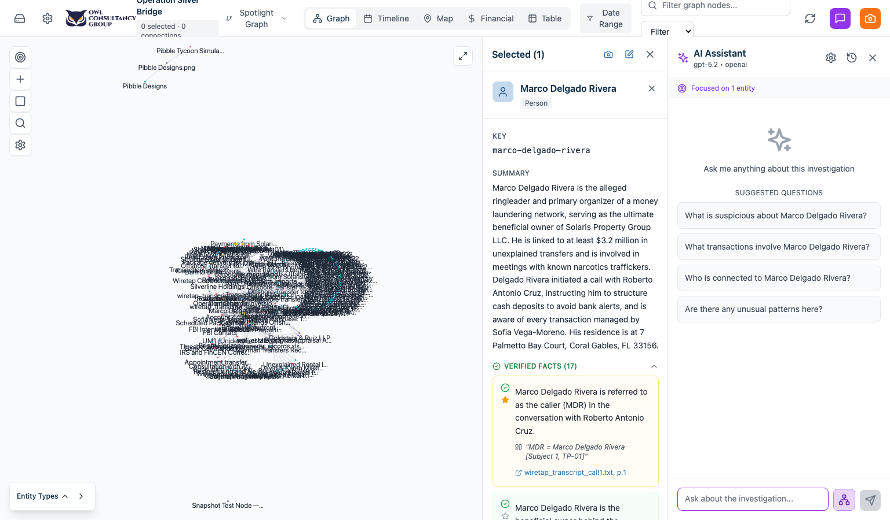
Steps
Step 1 — View the Graph
From the Workspace, the centre panel shows the interactive knowledge graph. Entities appear as coloured nodes, relationships as connecting lines. Each colour represents an entity type (Person, Company, Account, Transaction, etc.). The Entity Legend at the bottom shows the colour mapping.
Step 2 — Navigate the Graph
| Action | How |
|---|---|
| Select a node | Click on it |
| Select multiple nodes | Hold Ctrl/Cmd and click each |
| Drag-select | Switch to drag mode (crosshair icon), drag a rectangle |
| Zoom in/out | Mouse wheel |
| Pan | Click and drag the background |
| Centre view | Click the centre button (crosshair icon) |
Step 3 — Search & Filter
The search bar supports two modes:
- Filter Mode (default): Matching nodes remain visible; non-matches fade. Results update as you type.
- Search Mode: Manually click “Search” to find matches.
Advanced query syntax:
john AND smith— Both terms must matchbank OR financial— Either term matchesNOT closed— Exclude matchessmith*— Wildcard: starts with “smith”~john— Fuzzy match: similar to “john”
Step 4 — Expand Relationships
Right-click a node and select Expand from the context menu. Choose the number of hops (1–5) to follow. You can also double-click a node to expand its immediate connections.
Step 5 — Use the Spotlight Graph
The Spotlight Graph lets you build a focused subgraph: select nodes, right-click → Add to Spotlight Graph. A split panel shows only your selected nodes and their connections. Add more nodes as you investigate.
Step 6 — Switch View Modes
Use the view mode switcher to see your data differently:
- Graph — Force-directed network visualization
- Table — Tabular view with expandable panels
- Timeline — Events arranged chronologically
- Map — Geographic visualization (when location data exists)
- Financial — Transaction analysis view
5 Investigating Entities — Facts, Insights & Source Documents
What you’ll learn: How to examine entity details, verify AI insights, pin important facts, and view source documents for any file type.
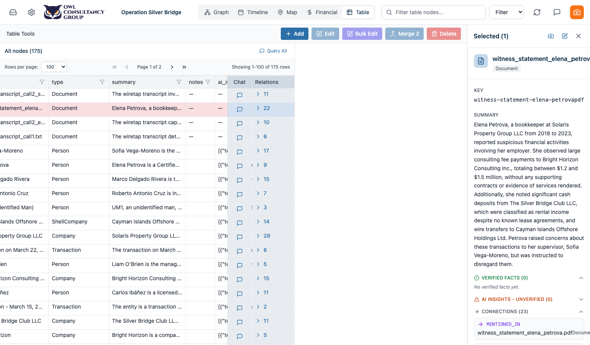
Steps
Step 1 — Open Entity Details
Click any node in the graph. The Node Details panel appears on the right showing: entity name and type, AI-generated summary, verified facts, and AI insights.
Step 2 — View Source Documents
Every fact and insight has a source citation. Click the source document link to preview the original document. The Document Viewer supports all file types:
| Source Type | What You See |
|---|---|
| Full PDF viewer with page navigation | |
| Image | Image viewer (photos, scanned documents, screenshots) |
| Audio | Audio player with playback controls |
| Video | Video player with playback controls |
| Text | Formatted text content |
Step 3 — Verify AI Insights
AI Insights are observations the LLM made but hasn’t confirmed. Each shows a confidence level (High, Medium, Low). Click Mark as Verified to convert an insight to a verified fact.
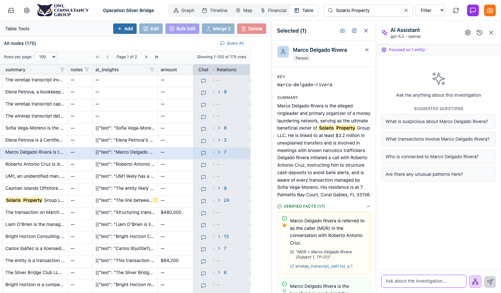
Step 4 — Pin Important Facts
Click the star icon next to any verified fact to pin it. Pinned facts appear in the Pinned Evidence section of your workspace and are highlighted in exports.
Step 5 — View Relationships
Scroll down in the Node Details panel to see the entity’s relationships. Click any related entity to navigate to it in the graph.
6 Building Investigation Theories
What you’ll learn: How to create theories, attach evidence, and use the AI to find entities that support your theory.
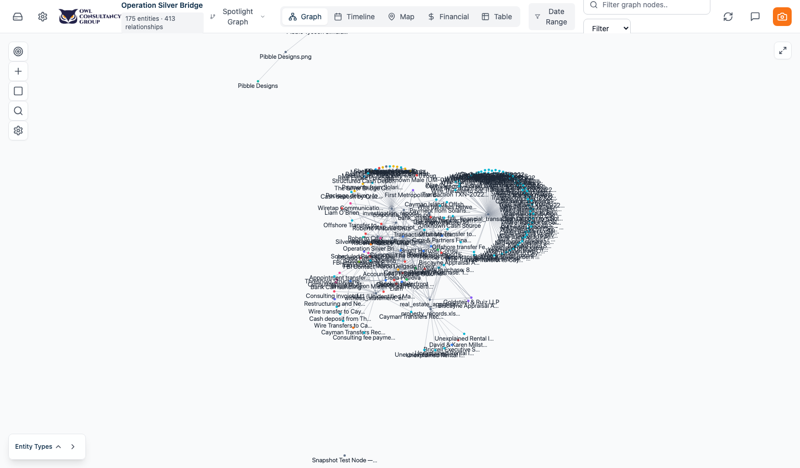
Steps
Step 1 — Create a Theory
In the Workspace, open the Theories section in the left sidebar. Click the + button. Fill in:
- Title — Name your theory
- Type — Primary, Secondary, or Note
- Hypothesis — Describe your theory in detail
- Confidence Score — Rate your confidence (0–100%)
- Supporting Evidence / Counter Arguments / Next Steps
- Privilege Level — Public, Attorney Only, or Private
Step 2 — Attach Items to the Theory
Click the link icon on the theory card to open the Attached Items modal. Browse available items (evidence, witnesses, notes, tasks, snapshots) and click Attach.
Step 3 — Build a Theory Graph
Click the network icon on your theory card. Choose whether to use theory text only or include attached items. Click Build Graph — the AI searches the knowledge graph for entities semantically related to your theory.
Step 4 — Mark Linked Files as Relevant
Click the star icon on the theory card to mark all files attached to the theory as Relevant.
7 Marking Evidence as Relevant
What you’ll learn: How to classify evidence files as relevant or non-relevant to organise your investigation.
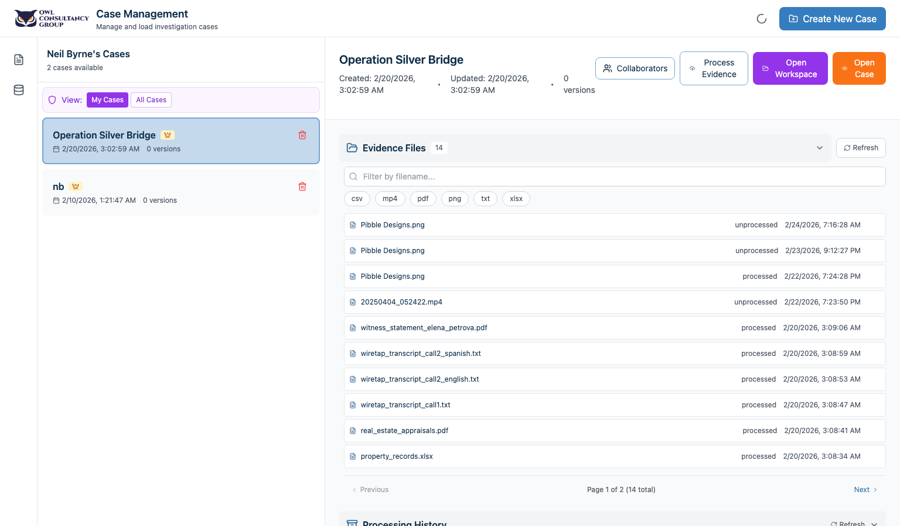
Steps
Step 1 — Open Case Files
In the Workspace, open the Case Files section. You’ll see three tabs: All Files, Relevant, and Non-Relevant, each with a count.
Step 2 — Mark Files Individually
Each file row has a star icon: empty star = non-relevant (click to mark as relevant), filled amber star = relevant (click to remove).
Step 3 — Bulk Mark from a Theory
Find your theory with attached evidence, click the star button — all files linked to the theory are marked as relevant.
Step 4 — Filter by Relevance
Use the tabs to focus on All Files, Relevant, or Non-Relevant. Within each tab, filter further by Processed or Unprocessed status.
Step 5 — Spot Duplicates
Files uploaded more than once show a ×N badge (e.g., “×2” means two copies exist).
8 Finding & Merging Duplicate Entities
What you’ll learn: How to use the AI to scan for similar entities and merge duplicates to keep your investigation clean.
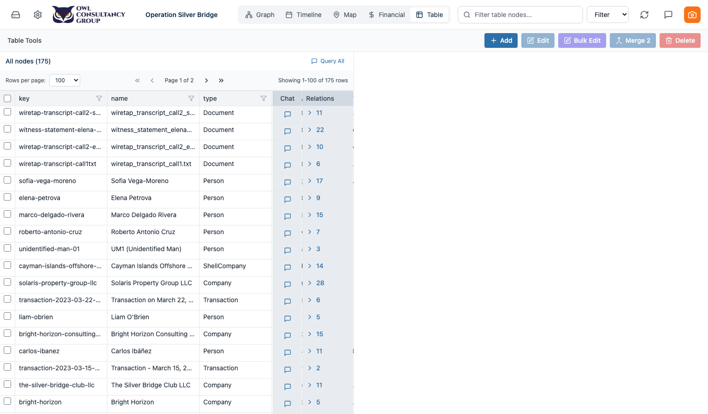
Why this matters
When processing many documents, the LLM may create separate entities for the same real-world person or company (e.g., “John Smith”, “J. Smith”, “Smith, John”). Merging these gives you a complete picture.
Steps
Step 1 — Launch Similar Entity Scan
In the graph view, click the Find Similar Entities button in the toolbar (magnifying glass with double arrows).
Step 2 — Configure the Scan
Select which entity types to scan (Person, Company, etc.), set the similarity threshold, and click Start Scan.
Step 3 — Review Results
Results show pairs of similar entities with similarity scores (e.g., “John Smith” ↔ “J. Smith” at 95%).
Step 4 — Compare and Merge
Click any pair to open the Entity Comparison modal with a side-by-side view. Choose which name to keep, select which facts and insights to include, then click Merge. Or click Reject if they’re genuinely different entities.
Step 5 — Manual Merge
Select two or more nodes in the graph (Ctrl/Cmd+Click), right-click → Merge Selected Entities.
9 Using the Investigation Workspace
What you’ll learn: How to use the workspace’s many investigation tools.
Quick Actions — Add Evidence on the Fly
At the top of the left panel, three quick action buttons let you add evidence without leaving the workspace:
- Photo — Upload a photo directly from your device
- Note — Create an investigative note with tags
- Link — Save a URL with title and description
Witnesses
Click Witnesses in the left sidebar, then + to add a witness. Fill in name, role, contact info, risk assessment, strategy notes. Add interviews with date, summary, and notes. Attach witnesses to theories.
Tasks
Click Tasks to create and manage investigation tasks. Set title, description, assignee, due date, and priority. Mark as Complete when done.
Deadlines
Click Deadlines to add court dates, filing deadlines, and set the trial date to anchor your timeline.
Investigative Notes
Click Notes to create timestamped investigative notes with tags. Notes can be attached to theories.
Key Entities
The Key Entities section shows all entities grouped by type. Click any entity to navigate to it in the graph.
Case Overview
Click Case Overview for a horizontal dashboard showing all sections at a glance. Each section can be toggled for export.
Investigation Timeline
The Timeline section shows all investigation events arranged chronologically across threads: Witnesses (blue), Tasks (green), Theories (yellow), Evidence (orange), Deadlines (red), Snapshots (purple).
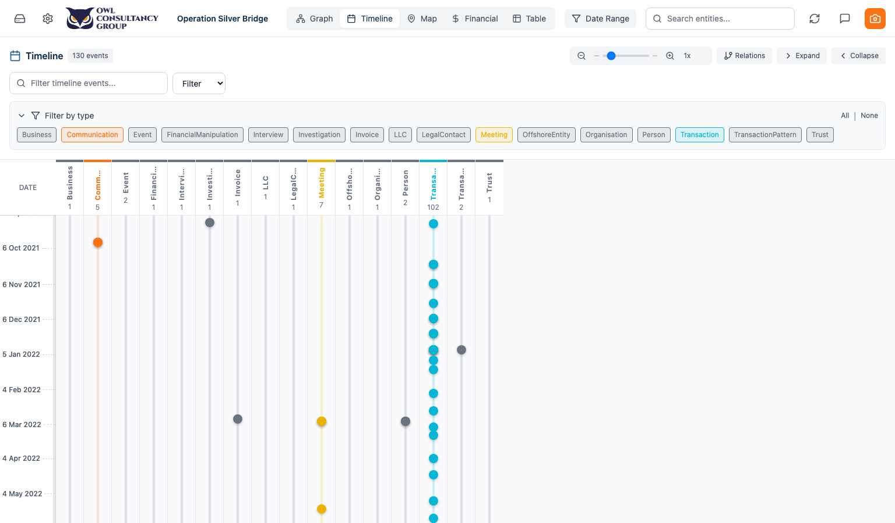
10 Saving & Comparing Snapshots
What you’ll learn: How to save the state of your investigation at key points and compare how it has evolved.
Steps
Step 1 — Save a Snapshot
Click the camera icon in the toolbar or go to Snapshots in the sidebar. Click Save Snapshot, give it a name (e.g., “Pre-interview state”), add notes, and click Save.
The snapshot captures: the graph state, selected nodes, node positions, chat history, and table configuration.
Step 2 — Load a Previous Snapshot
Open the Snapshots section. Each snapshot shows name, date, and node/link counts. Click Load to restore your workspace to that exact point in time.
Step 3 — Compare Two Snapshots
Select two snapshots and click Compare. A side-by-side view highlights new entities added, entities removed, changed relationships, and modified properties.
Step 4 — Export a Snapshot to PDF
Click Export PDF on any snapshot to generate a PDF report of the graph and entity details at that point in time.
11 Financial Transaction Analysis
What you’ll learn: How to use the financial view to analyse transactions, identify patterns, and group related transactions.
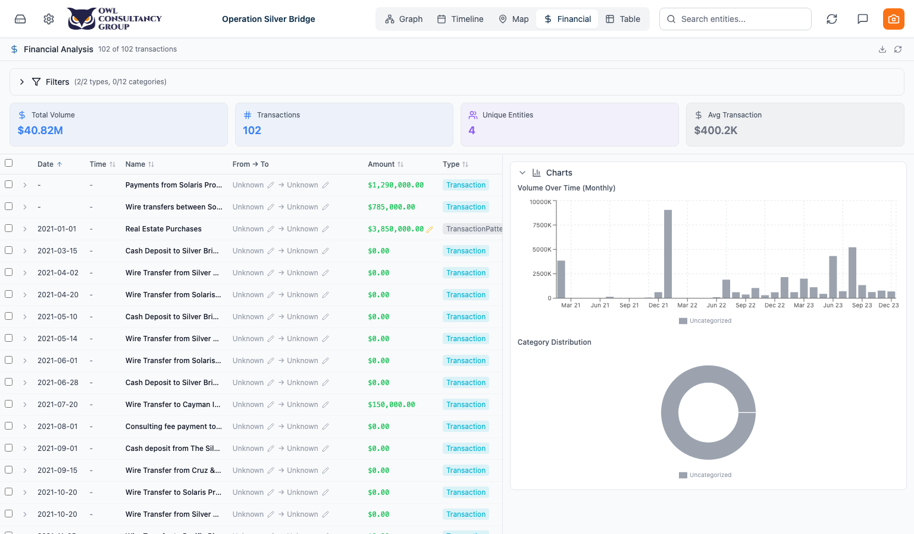
Steps
Step 1 — Switch to Financial View
Select Financial (dollar icon) in the view mode switcher. The view shows summary cards, a transaction table, and volume charts.
Step 2 — Filter Transactions
Use the category filter pills at the top to focus on specific transaction types. Sort by any column (amount, date, counterparty) or search by text.
Step 3 — Group Sub-Transactions
When you identify transactions that belong together:
- Find the parent transaction in the table.
- Right-click and select Group as Sub-Transaction.
- A modal opens — search and select the child transactions.
- Click Group.
The parent row now shows an expand arrow. Click it to reveal sub-transactions nested underneath.
Step 4 — Edit Transaction Details
Click into any transaction to edit purpose, counterparty, and notes. Click the dollar amount to correct it (with audit trail).
12 Wiretap Folder Processing
What you’ll learn: How to process structured wiretap folders containing audio, metadata, and interpretation files.
Context
Wiretap data typically comes in folders containing audio recordings (.mp3, .wav), metadata files (.sri), and interpretation documents (.rtf). OWL can process these as a unit.
Steps
Step 1 — Upload Wiretap Folders
Use Upload Folder in Evidence Processing. Select the parent folder containing your wiretap call folders. The folder structure is preserved.
Step 2 — Navigate to a Wiretap Folder
In the File Navigator, browse to a wiretap folder. The system automatically detects wiretap-suitable files.
Step 3 — Create a Processing Profile
Click the info icon on the folder. In the File Info panel, click Create Custom Profile:
- Choose Instructions mode and describe how to process the folder, or
- Configure manually: assign file roles (audio, metadata, interpretation, ignore), set transcription and translation languages, configure LLM settings
- Click Test Profile to preview results
- Click Save Profile when satisfied
Step 4 — Process the Folder
Select folders, choose your profile, and click Process as Wiretap (or Process All Folders for batch). Processing runs as a background task.
Step 5 — Monitor Progress
Check the Background Tasks panel. Processing involves: audio transcription (Whisper), metadata extraction, interpretation parsing, entity extraction, and graph integration. Completed folders show a green radio icon.
13 Using the AI Chat Assistant
What you’ll learn: How to ask the AI questions about your case and get answers grounded in your evidence.
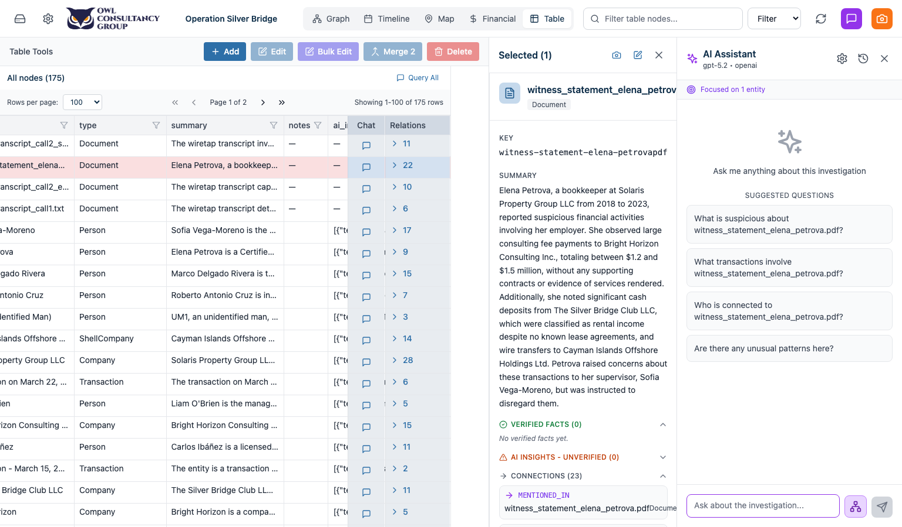
Steps
Step 1 — Open the Chat Panel
Click the chat icon in the right sidebar to open the Chat Assistant.
Step 2 — Choose a Context Mode
| Mode | What the AI Sees |
|---|---|
| Full Graph | All entities and relationships in the case |
| Selected Nodes | Only the entities you’ve selected in the graph |
| Spotlight Graph | Only entities in your spotlight/subgraph |
| No Context | General knowledge only (no case data) |
Step 3 — Ask Questions
Type your question and press Enter. Examples:
- “What is the relationship between John Smith and Acme Corp?”
- “Summarise all financial transactions over $10,000”
- “What evidence links the suspect to the offshore accounts?”
Step 4 — Review Answers with Citations
The AI’s response includes citations linking back to source documents. Click any citation to open the Document Viewer and see the original evidence.
Step 5 — Use Debug Mode
Toggle Debug to see the RAG pipeline trace — which documents were retrieved, how they were ranked, and what context was provided to the LLM.
14 Exporting & Reporting
What you’ll learn: How to export your investigation findings for reports, court filings, or team briefings.
Export Options
Case Overview Export
- Go to Case Overview in the workspace.
- Each section card has an Include in export checkbox.
- Select the sections you want.
- Click Export Case.
- A PDF is generated with all selected sections.
Snapshot PDF Export
- Go to Snapshots in the workspace.
- Click Export PDF on any snapshot.
- A PDF showing the graph state and entity details at that point is generated.
Theory Export
- Go to Theories in the workspace.
- Open the Attached Items modal on a theory.
- Click Export.
- An HTML report with the theory and all attached evidence is generated.
Financial PDF Export
- Go to the Financial view.
- Apply any filters you want.
- Click the Download icon in the toolbar.
- A branded PDF report of the visible transactions is generated.
15 Backfilling Summaries & Embeddings
What you’ll learn: How to generate missing AI summaries and embeddings for documents that were uploaded before these features were added.
When to use this
If you notice that some documents or entities are missing summaries, or that the AI chat isn’t finding relevant documents, you may need to backfill.
Steps
Step 1 — Open the Database Modal
From the settings or admin area, click Database. The Database Modal opens.
Step 2 — Run Gap Analysis
Click the RAG Pipeline tab. Cards show what’s missing (e.g., “47 chunks need embeddings”, “12 documents need summaries”).
Step 3 — Run Backfill Operations
Click the appropriate button:
- Backfill Chunk Embeddings — Generates vector embeddings for document chunks (needed for semantic search and RAG)
- Backfill Document Summaries — Generates AI summaries for documents (uses LLM, takes longer)
- Backfill Entity Metadata — Adds case_id to entities missing it
- Backfill Case IDs — Assigns case ownership across Neo4j and ChromaDB
Monitor progress below each button. Embedding backfill is fast; summary backfill is slower.
16 Administration & User Management
What you’ll learn: How to manage users, monitor system activity, and maintain the platform.
Creating Users
- From the admin area, click Create User.
- Fill in: username, email, password, role (admin, investigator, viewer).
- Click Create.
System Logs
The System Logs panel shows all platform activity: user logins, evidence uploads and processing, entity modifications, case operations. Filter by user, action type, or date range.
Case Audit Log
Within each case’s workspace, the Audit Log section shows case-specific activity — who did what and when.
Workflow Cheat Sheet
New Case Setup
Create Case → Upload Evidence → Process with LLM → Explore Graph → Save Snapshot
Daily Investigation
Load Case → Review Graph → Investigate Entities → Verify Insights → Pin Facts → Save Snapshot
Building a Theory
Create Theory → Attach Evidence → Build Theory Graph → Review Entities → Mark Files Relevant → Export
Data Cleanup
Find Similar Entities → Compare Pairs → Merge Duplicates → Backfill Summaries
Preparing for Court
Review Relevant Files → Export Case Overview → Export Theory Reports → Export Snapshot PDFs
Wiretap Processing
Upload Folders → Create Profile → Process Wiretaps → Review Transcriptions → Explore Entities in Graph